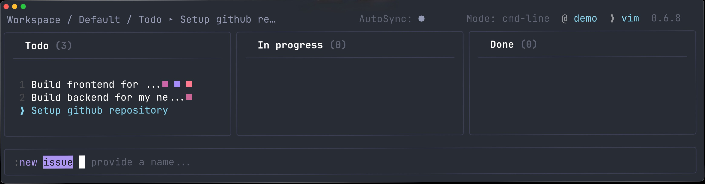

hjkl
Keyboard centric
Navigate boards, issues, swimlanes, and contexts with vim-like movement. Or cheat with arrow keys.
Epiq is a vim-inspired issue tracker that renders as ASCII, stores work as an immutable event log, and synchronizes through Git. No SaaS ceremony. No browser. Just your repo, your editor, and a board that moves at command-line speed.
Epiq optimizes for flow: keyboard navigation, command history, filters, autocompletion, and plain Git synchronization.
Navigate boards, issues, swimlanes, and contexts with vim-like movement. Or cheat with arrow keys.
Epiq uses Git under the hood, with isolated worktrees and state branches, so teams can collaborate without introducing another central service.
Changes are appended as events, replayed deterministically, and designed to converge. Inspect what happened yesterday, last week, or one year ago.
Create, move, filter, close, reopen, and sync issues without tab-switching. Epiq keeps local interaction instant while allowing you to sync explicitly or automatically.
# inside any Git repo
epiq
# create work
:new issue Add keyboard shortcuts
# narrow the board
:filter tag prio
# synchronize distributed state
:sync
Issue tracking should be smooth.
- probably someoneInstall globally, enter any Git repository, and run Epiq. First launch opens an interactive setup wizard.
npm install --global epiq
cd your-existing-repo-with-remote-tracking
epiq